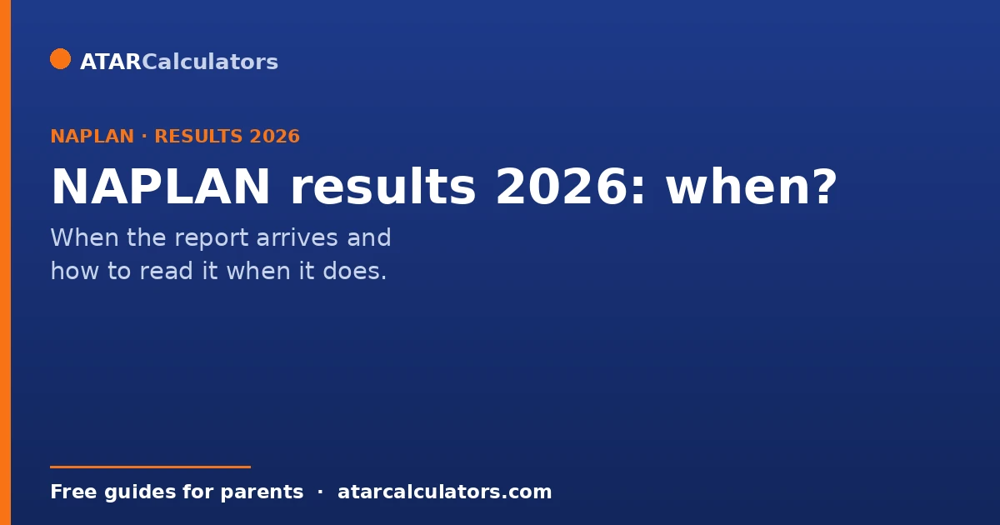
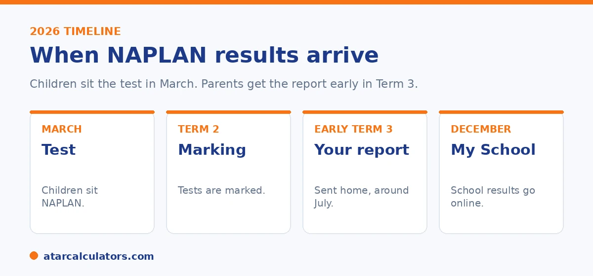

Here is the short version. Children sat NAPLAN in March 2026. Parents get the Individual Student Report through their school early in Term 3, which usually means around July. School level results appear on the My School website later in the year, usually December. If you have not got your child's report by mid August, contact your school.
Once the test is done in March, the wait begins. Marking takes time, so reports do not arrive straight away. The good news is the timeline is fairly steady each year.
Below is what to expect in 2026, how the report reaches you, and what to do if it is running late. When it arrives, our guide to reading the report walks through every part.
Key takeaways
- Children sat NAPLAN in March 2026.
- Parents get the Individual Student Report early in Term 3, usually around July.
- The report comes through your school, not directly from a website.
- School level results appear on My School later in the year, usually December.
- If you have not got the report by mid August, contact your school.
- The report shows your child's level in each area, with the national average.
The NAPLAN 2026 timeline
Since 2023, NAPLAN runs in March rather than May. That earlier timing means results reach schools and parents sooner. Here is how 2026 plays out.

Children sat the test in March. The tests are then marked through the following weeks. Parents get the Individual Student Report early in Term 3, which usually falls around July. The exact date varies a little by state and by school, because schools hand out the reports themselves.
How to access your child's report
The Individual Student Report comes through your child's school. Schools get the reports and pass them on to parents, either as a printed copy sent home or through their secure school communication system. There is no public website where you log in to see your own child's NAPLAN result.
If you are not sure how your school sends reports, check your school's newsletter or app, or ask the front office. For privacy reasons, the testing authorities cannot send your child's report to you directly. It always comes through the school.
What to do if the report is late
Reports usually arrive early in Term 3. If you have not got your child's report by mid August, it is worth following up.
Start by checking any printed material that came home in your child's bag, and any school app or email. If you still cannot find it, contact the school office. They can confirm when reports were sent and arrange another copy if needed.
A few extra points help if the report is delayed or you are simply waiting on it. Timing varies a little between states and schools. So a report arriving somewhat later than a friend's in another state is usually nothing to worry about. Distribution schedules differ. Reports also travel in different ways, sometimes as a printed copy sent home with your child, sometimes electronically through a school portal or email. So it is worth checking every channel your school uses before assuming it is missing. This is because electronic copies are easy to overlook in a busy inbox or app. If it genuinely has not arrived by the time most families have theirs, a short message or call to the school office is the right step. They can confirm the date reports were issued, check whether yours went astray, and provide another copy. It also helps to keep the wait in perspective. Individual NAPLAN results are a useful snapshot. But they are not time-critical in the way exam results feeding an application are. There is no deadline riding on when the report lands. So a delay of a week or two changes nothing about how you can use it. When it does arrive, focus on reading the proficiency level alongside the scaled score for each domain. That is where the meaningful information sits, rather than on how promptly it came.
Got the report and want to know what the score means?
Open the NAPLAN score calculator →School results on My School
The Individual Student Report is about your child. Separately, school level results appear on the My School website later in the year, usually around December. These show how a whole year group at a school performed on average.
My School does not show individual children. It is useful if you want to see how a school is tracking overall. But it will not tell you about your own child's result. For that, you need the report from the school.
What the report shows when it arrives
When the report lands, you will see your child's result in each area: reading, writing, spelling, grammar, and numeracy. Each area shows a level, a dot on a scale, the typical range for the year, and the national average.
The four levels are Exceeding, Strong, Developing, and Needs additional support. Strong is the level expected for the year. For a full walk through, see our guides on reading the report and what counts as a good score.
What to do if a result concerns you
If the report leaves you worried, the best next step is to talk to your child's teacher. They see your child's work every day, and can tell you whether one result matches what they observe.
Often a single low result does not match the classroom picture. Where it does, the teacher can suggest practical support. Either way, you learn far more from that conversation than from the report alone.
Keeping the result in perspective
NAPLAN is one piece of information among many. It does not measure effort, creativity, curiosity, or how your child is growing as a person. It is a check on literacy and numeracy at one moment.
So take what is useful from it, and hold it lightly. A report is a starting point for a conversation, not a final word on how your child is doing.
Common questions
When do NAPLAN results come out in 2026?
Parents get the Individual Student Report early in Term 3, usually around July. The exact date varies by state and school, because schools hand the reports out themselves.
How do I access my child's NAPLAN report?
The report comes through your child's school, either as a printed copy or through the school's secure communication system. There is no public website to log in and see your own child's result.
Why can't I get the report directly?
For privacy reasons, the testing authorities cannot send your child's report to you directly. It always comes through the school.
What if I have not got the report?
If you have not got it by mid August, check anything sent home and any school app or email, then contact the school office. They can arrange another copy if needed.
When are school NAPLAN results published?
School level results appear on the My School website later in the year, usually around December. These show year group averages, not individual children.
When did children sit NAPLAN in 2026?
Children sat NAPLAN in March 2026. Since 2023, the test runs in March rather than May, so results can be returned earlier.
What does the report show?
It shows your child's result in reading, writing, spelling, grammar, and numeracy. Each area shows a level, a dot on a scale, the typical range, and the national average.
See what your child's score means
Enter a NAPLAN score and year level to see the level and where it sits. Free, and no signup.
Open the NAPLAN score calculator →Related guides
This guide is general information for parents, not formal advice. NAPLAN dates and reporting can change. So always check the official details on the National Assessment Program (NAP) site, and confirm timing with your school. Reviewed by the ATARCalculators Editorial Team.